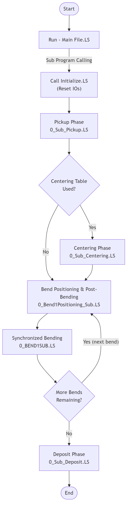

.LS Program Structure
This page describes the structure of the .LS program files generated by the
Post-Processor. Each file handles a specific phase of the robot cycle - pickup,
centering, bending, and deposit. Sample files are provided for reference.
File Structure
Following is the file structure generated by Post Processor for a respective robot program created in FluxRobot CAM.

|
The above .LS file structure is explained below in detail along with sample codes.
Program Execution Flow
The following flowchart illustrates the execution sequence of the generated .LS files from start to finish:

Main file
0_200x200partV3.LS - This is main file which has the main program and it calls the other sub files. The .fx file name that we give in FluxRobot CAM will be the main .LS file name that gets generated by default.
Sample: Main File
Sub files
The sub files are called by the main file. Following are the sub files and their purpose:
-
0_Sub_Pickup.LS - It contains the code for the pickup phase of the robot, where the robot picks up the part from the pallet.
Sample: Sub_Pickup.LS
-
0_Sub_Centering.LS - It contains the code for the centering phase of the robot, where the robot centers the part on the centering table.
0_Sub_Centering.LS file will be generated only when the centering table is used in FluxRobot CAM. If the centering table is not used, then the robot will directly transition from pickup to bend positioning. Sample: Sub_Centering.LS
-
0_Bend1Positioning_Sub.LS - It contains the code for the bend positioning and post bending phase of the robot.
Sample: Bend1Positioning_Sub.LS
-
0_BEND1SUB.LS - It contains the code for the Syncronized bending phase of the robot, where the robot performs the bending operation in a synchronized manner with the press brake machine.
Sample: BEND1SUB.LS
| The number of bends in a part determines the number of bend positioning, synchronized bending sub files and Ram point files. For example, if there are 2 bends, then there will be 2 bend positioning sub files and 2 synchronized bending sub files and 2 Ram point files. See the file structure image above for reference. |
-
0_Sub_Deposit.LS - It contains the code for the deposit phase of the robot, where the robot deposits the part in the desired location after bending.
Sample: Sub_Deposit.LS
-
BEND1_RamPts.txt - It contains the Ram point values for the synchronized bending operation. To perform the synchronized bending operation, these points helps the robot to synchronize its movement with the press brake machine.
Providing bend support points in FluxRobot CAM determines the number of RAM points and Robot bend support points in BEND1_RamPts.txt file and BEND1SUB.LS file respectively.
Navigate to Settings → Machine Defaults → Bend CAM → Bend Cell to provide the bend support points in FluxRobot CAM.

Sample: BEND1_RamPts.txt
| Ensure that the Bend support points provided in FluxRobot CAM is same as in Right Angle’s Bend support points for the respective part. Otherwise, it may lead to synchronization issues during the bending operation. |